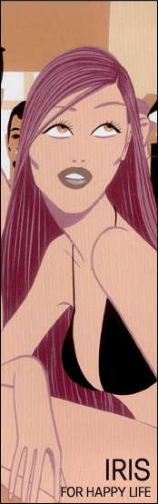

볼륨 있는 몸의 첫 번째! 이제 당당히 가슴을 내밀어보자!
목표 : 미학적으로는 가슴을 위에서 내려다 볼 때, 유두가 약간 바깥쪽으로
향하고 있는 것이 좋다고 하며,
겨드랑이와 가슴을 연결하는 부위가 볼록하게 나와 있으면 건강하고 예쁜 가슴이라 칭합니다.
크기는 개개인의 체형과 몸무게에 따라 다르지만, 허리 싸이즈에 20~25 cm를 더한
싸이즈가 우리나라
여성의 표준 싸이즈로 알려져 있습니다.
아이리스만의 고품격 상담 및 수술 방법 결정.
아름다운 유방의 조건은 풍만한 볼륨, 매끄러운 피부결과 색깔, 탄력, 탄력적으로 보이는
실루엣, 신체와의
황금비라고 생각됩니다.
유방확대술은 유방의 발육이 부적한 경우와 출산 후 유방의 퇴행과 더불어 유방이 늘어지면서
작아지는
경우에 필요하게 됩니다.
유방과 유두의 위치, 크기가 수술에 중요한 지침이 되며 나이, 키, 체중, 출산유무,
본인과 주위사람들의
취향 등을 고려하여야 합니다.
가장 중요한 것은 신체와의 조화와 비례입니다.
유방의 하수가 동반 되어 있으면 유방하수교정술도 같이 받아야 합니다.
유방 확대에 사용 하는 재료로는 실리콘 막으로 싸여 진 주머니 내에 생리식염수나 젤 타입의
물질이 들어 있는 인공 삽입물을 사용 하게 됩니다. 근년에 문제가 제기 되었던 자가면역
질환의 원인이 될 수도 있다는 설은 밝혀진 근거가 없으며 안전한 수술입니다.
|
|
|
 |

 마취: 전신마취
수술시간: 1시간 반정도
입원 : No
회복기간: 1주일
마취: 전신마취
수술시간: 1시간 반정도
입원 : No
회복기간: 1주일 |
|
|
|
전문의들이 정의하는 예쁜 가슴은, 가슴의 모양과, 목에서부터 가슴까지의 라인,
그리고 유두가 향하고 있는 방향 등으로 결정됩니다.
우선 가슴은 원추형 모양이 이상적이고 목에서부터 유두까지 흘러야 멋이 난다고 합니다.
예쁜 가슴을 결정하는 가장 중요한 요소는, 목의 가운데 뼈에서 유두까지 의 길이입니다.
이는 가슴이 어느 정도 아래로 처져 있는가를 나타내는 것으로, 동양인은 보통 18~23
cm 정도가 이상적이라고 합니다.
또 가슴이 안쪽으로 향하고 있는지 바깥쪽으로 향하고 있는지도 예쁜 가슴을 만드는 중요한
요소입니다.
|
|
|
| |
마취: 전신마취
수술시간: 1시간 정도
입원 : No
회복기간: 1주일 |
|
|
|
생리식염수를 넣은 실리콘주머니 삽입하거나 자가 지방을 이식하여 수술을 합니다.
수술하는 경로 (절개부위) 는 유방하 주름위, 유륜의 경계, 또는 겨드랑이 주름선
상에 3-4 cm 정도의
작은 절개선 또는 배꼽을 통해 수술을 합니다.
상처가 적은 배꼽을 통한 확대 수술이 최근 많이 시술되고 있습니다. 삽입물의 위치는
근육위와 근육하부로
운동을 많이 하는 사람은 주머니가 움직이므로 근육위에 넣는것이 좋습니다.
유방 확대를 위하여 삽입물을 넣는 위치는 근육밑과 유선밑으로 하는 두가지가 있습니다.
장단점이 있으며 어느 방법으로 수술 하더라도 추후 출산과 모유의 수유에는 지장이 없습니다.
참고)
 식염수 백(saline bag)
식염수 백(saline bag)
식염수 백은 인체액과 일치하는 0.9%의 식염수가 팩을 채우고 있으며 실리콘백과 함께
유방확대 수술에 가장 많이 사용되는 보형물로 감촉의 문제로 실리콘 백보다 덜 사용
되었습니다. 그러나 실리콘의 안정성에 대한 문제로 최근에 가장 많이 사용되고 있습니다.
식염수 백은 누출된다 하여도 인체에 해가 없고 흡수되어도 소변으로 배출된다 장점이
있는 반면에 감촉이 실리콘에 비해 많이 떨어진다는 단점이 있습니다.
최근에는 밸브리스백(valveless)이 개발되어 소금물이 조금씩 누출이 되는 것을
막을 수 있습니다. 밸브리스백은 절개를 좀더 크게 해야한다는 단점이 있으나 가슴모양에
따라 이전의 생리식염수백에 비해서 조금 더 자연스러운 라인을 만들 수 있습니다.
더블루멘 백(Double Lumen bag)
더블루멘 백은 최근 각광받고 있는 보형물입니다.
팩의 외형은 실리콘젤로 내부는 식염수를 주입하도록 두개의 방으로 구성되어 있어 겉에
실리콘을 싸고 있는 주머니를 통해 안에 들어있는 실리콘이 새어나오는 정도가 낮습니다.
더블루멘은 전체가 실리콘젤로 이루어진 실리콘백보다 절개가 작아진다는 장점이 있으며
보형물 삽입 후 식염수를 주입하므로 더 작은 절개로 수술이 가능합니다. 또한 식염수
주입의 폭이 넓어서 수술 후 일정기간 동안 경과를 관찰하며 사이즈조정 가능하고 간혹
마모로 인한 누출이 된다 하여도 내부가 식염수로 이루어져 있어 식염수처럼 안전합니다.
또한 백의 외형이 실리콘젤로 구성되어있기 때문에 실리콘처럼 좋은 촉감을 느낄 수 있습니다.
그러나 비용이 다소 비싼 단점이 있습니다.
실리콘 백(silicone bag)
유방확대수술에 가장 많이 사용되고 있는 보형물로 실리콘 주머니에 인체내 지방과 같은
감촉을 주는 실리콘으로 구성되어 있습니다. 한때 시간이 지나면서 장기에 영향을 준다는
사례가 발생하여 사용을 금지했지만 IRG의 연구결과 류머치스 관절염 종류의 면역기능
저하질환을 가진 여성을 제외한 정상여성의 건강에 해를 주지 않는다는 결과와 1999년도
이후부터 실리콘액이 위의 질환과 관련이 없다는 보고가 발표되어 다시 많이 사용하고
있습니다.
뛰어난 감촉으로 일본, 유럽등에서는 이미 실리콘백을 사용하는 추세입니다.
하이드로겔백 (hydrogel bag)
식염수 백과 실리콘팩의 단점을 보완한 것이 하이드로겔백입니다. 다당류(포도당)젤로
백이 채워져 있어 실리콘보다는 감촉이 떨어지지만 식염수보다는 감촉이 뛰어나다는 장점이
있습니다.
| |
함몰유두
교정술 - 젖꼭지가 피부 속으로 들어갔어요? |
|
|
|
| |
마취: 전신마취
수술시간: 40분정도
입원 : No |
|
|
|
유두함몰(Inverted Nipple)란 유두(젖꼭지)가 돌출 되어 있지 않고 유방
안으로 파묻혀 있는 상태를 말합니다. 대부분은 선천성 기형의 일종으로 유발되나
후천적으로 유방염이나 외상, 유방축소수 술 후 생기는 경우도 있습니다.
선천적인 경우 대부분의 원인은 유두 밑의 밴드모양의 조직이 잡아당김으로 인해
유발 되어집니다.
미용상의 문제 뿐 아니라 출산 후 수유 등에도 지장을 주며 함몰되어 있는 부분의 청
결을 유지하기 어렵기 때문에 위생상 몸에 해롭습니다.
이 질환은 먼저 물리적 치료를 하여 자연적으로 나오도록 하여 보고 이 방법 등으로
교정이 되지 않는 경우 수술을 하게 됩니다.
수유 등이 필요한 여성에게는 유선조직이 되도록 다치지 않는 방법을 택하여야 합니다.
수술 후 수유에는 지장이 없으며 (단 정도가 심한 경우 유관을 다칠 위험이 매우 높습니다)
교정하지 않은 경우 수유가 란하게 되므로 임신하기 오래 전에 수술 받는 것이 좋습니다.
[함몰유두의 종류 및 치료]
A형(경증)- 유두가 추울때나 자극을 받으면 나오는 유형으로 물리적인
치료를 시도 해봅니다.
수술은 아주 간단하며 유관의 손상이 없고 수술후 재발확률이 매우 적습니다.
B형(중등증)- 젖꼭지의 모양은 있는 상태로 묻혀있는 경우 물리적인 치료를
해본 후 효과가 없으면
수술을 결정합니다. 수술 흉터가 많지 않고 유관의 손상은 10% 미만이므로 수유장애는
없습니다.
C형(중증)- 젖꼭지의 모양이 없으면서 단단한 띠가 당기고 있는 경우로
간단한 수술 을 하면 반이상이
재발을 하는 경우입니다.
B형과는 절개부위와 수술방법이 다릅니다. 그래도 재발할 확률은 높습니다.어느 정도의
유관의 손상이
예상됩니다. 약 30-40%의 유관손상이 있습니다. 다소의 유관손상이 생기지만 수술을
하지 않고는 절대
수유를 할수 없는 경우이므로 수유를 위해서는 수술을 하시는 것이 바람직합니다.
| |
유방축소술
- 가슴이 너무 커서 어깨가 아파요? |
유방이 커서 생기는 문제들
유방이 너무 큰 경우는 외관상의 문제뿐만 아니라 여러가지 문제를 야기합니다.
어깨, 목이 당겨서 항상 무겁고 통증이 있으며 유방의 무게 때문이거나 유방이 큰것을
감추기 위하여 자세가 앞으로 굽어지며 유방 밑 주름의 피부상태가 습하고 불량해집니다.
무거운 유방때문에 유방 윗부분의 피부가 트게 됩니다.
유방축소술의 종류
1) 유륜주위 절개법 :
유륜주위 절개법은 흉터가 가장 적게 남는 방법입니다만 수술 후 한두달은 유륜주위가
쭈글쭈글하게
피부가 접힙니다. 한두달이 지나면 서서히 펴지기 시작하여 나중에는 매끈한 피부가 됩니다.
매끈해 지기 전까지 참고 기다리지 못하는 분들도 많습니다. 자리잡 는데 시간이 오래
요하는 피부가
두꺼우신 분은 적합하지 않은 방법입니다.
2) '1'자형 절개법 :
수술 후 유륜하부로 '1'자형으로 흉터가 남는 수술입니다.
예전에 많이 사용되던 'T'자형 수술의 변형으로 흉터가 덜 남는 장점이 있습니다.
유두를 원하는 위치까지 올려 고정한후 유방이 쳐지지 않게 유방하부 를 받쳐준후 유두아래를
직선으로
흉이 남게 봉합하는 방법입니다.
이 방법도 한두달은 봉합부위가 쭈글쭈글하지만 유륜주위절개법보다 는 훨씬 빨리 자리잡습니다.
흉이 많은 'T'자형수술과 흉은 적지만 자리잡는데 오래걸리는 유륜주 위절개법과의 중간형으로
가장 많이
사용되는 방법입니다.
3) 'T'자형 절개법 :
예전에 많이 사용되던 방법으로 수술후 꺼꾸로된 알파벳 'T'자 모 양으로 흉터가 남는
수술법입니다.
하부의 흉터는 사금으로 가리워지기 때문에 잘보이지 않으며 아직도 많이 사용되는 방법입니다.
결론) 대략적으로는
유방축소술에는 이러한 방법들이 있습니다.각각의 장단점이 있으므로 각자의 상황에 알맞
는 수술을 택하는 것이 중요하며 수술 받으실 분의 취향도 중요합니다.
유두가 유방하 주름보다 아래로 쳐진경우 유방하수라고 합니다.
유방하수의 정도
Grade A - 유두가 유방하 주름과 비슷한 정도로 쳐진 경우,
Grade B - 유방하 주름보다 더 내려온 경우,
Grade C - 유두가 거의 아래를 보고 있는 경우가 있습니다.
유방하수가 심한 경우는 유방하 주름의 피부가 짖무르고 습하여 위생상 좋지 않습니다.
수술은 흉터가 많이 남지 않습니다만, 어느정도 흉터가 남는다는것을 숙지하시기 바랍니다.
 |
 유방확대술..진짜
아픈가요?
유방확대술..진짜
아픈가요?
 최근에는 의술의 발달로 유방확대술을 하더라도 이전에 수술을 하시고 난 뒤에
느끼시는 것과 같은 통증은 없습니다.
최근에는 의술의 발달로 유방확대술을 하더라도 이전에 수술을 하시고 난 뒤에
느끼시는 것과 같은 통증은 없습니다.
물론 유방확대술은 전신 마취하에 시행하는 수술이므로 수술중에는 그냥 주무시고
계시는 것이 됩니다.
근래에 들어서는 수술을 하고 난 뒤에도 통증을 거의 못 느끼게 해 드릴 수가
있어서 수술이 끝난뒤에도 몇시간 정도 편안히 병원에서 주무시는 분들이 많답니다.
전혀 느낌이 없는 것은 아니며 약간 얼얼한 느낌은 있겠지만 이전과 비교한다면
많이 좋아지는 점이 있는 것 같습니다.
유방
확대 후 수유는 가능한가요?
유방확대술을 하는 경우 백이 위치하는 곳은 대흉근이라는 가슴의 대부분을 차지하는
근육의 뒤쪽에 놓이게 됩니다.
이는 수술 후 가슴이 딱딱해 지는 것을 막기위한 수술방법이며 가장 많이 시행되는
방법입니다. 여자분들에게서 수유를 담당하는 조직인 유선 조직은 이 대흉근의
앞쪽에 위치하게 됩니다. 수술을 하는 경우 백은 대흉근의 역활로 유선조직으로부터
전혀 다른 공간에 위치하게 되므로 수유를 하는데 전혀 지장이 없습니다. 하지만
운동을 아주 많이 하신 분 혹은 가슴 자체의 모양이 원추형인 경우는 대흉근
뒤쪽에 백을 넣는 것이 아니라, 유선조직 뒤쪽에 백을 위치시켜야 만족할만한
가슴의 모양이 나오기 때문에 이런 경우는 수유에 영향을 줄 수가 있습니다.
함몰유두
수술 후 수유가 가능한가요?
유두가 유방으로 쏙 들어가거나 평편한 함몰유두는 보기에도 안 좋고 질병의 원인이
되기도 하며 정신적인 고통을 드릴수도 있습니다. 질문하신 분과 같이 한쪽만
그런 증세가 나타나는 분도 계시겠지만, 대부분의 경우 양측성이며 유전적인 경향이
많습니다. 함몰유두는 특히 임신을 하게 되면 유두 주위의 근육이 비후해지고
수축을 하게 되어 유두가 유방의 밖으로나오기가 더욱 어렵게 되어 젖을 빨리기가
곤란할 뿐만 아니라 유두가 파묻혀 있어 유방염이 생기기가 쉽습니다.
이 같은 증상이 있는 여성이라면 출산 전 이를 반드시 고쳐 주는 것이 바람직합니다.
교정은 국소마취하에 시행할 수가 있으며 요즘은 무통마취를 시행하므로 마취를
할 때의 고통이나 수술중의 불안함은 걱정을 하지 않으셔도 되며, 함몰상태에
따라 수술법이 조금씩 달라지며, 유륜내에서 수술이 시행되므로 거의 수술자국이
없이 수술될 수 있고, 아주 함몰이 심했던 경우를 제외하면 출산 후 수유에도
지장이 없는 경우가 대부분입니다. 한가지 환자분들께서 알고 계셔야하는 점은
함몰유두인 경우, 체질적으로 수유가 불가능한 분들도 10%정도가 있다는 점입니다.
이런분들은 수술을 하면서 유선조직을 잘 유지한다 하더라도 수유가 불가능할 수도
있습니다.
촉감을
결정하는 것은 보형물 종류뿐 인가요?
꼭 그렇지 만은 않습니다. 물론 실리콘이나 식염수백이 기본적으로 감촉에 차이가
납니다.
하지만 개인에 따라서 적절한 사이즈의 백을 사용하고 술후 관리를 잘 한다면
어느 정도 감촉의 차이를 줄일 수 있습니다. 수술 후 촉감을 결정하는 것은
보형물도 중요한 부분을 차지 하지만 그보다 더 중요한 것은 체질적인 영향이나,
술후 관리, 사용한 삽입물의 크기 등이 영향을 미치는 경우가 많습니다.
실리콘백은
절대로 사용하면 안되나요?
IRG의 연구결과에 따르면 "실리콘은 류머치스 관절염 종류의 면역기능
저하질환을 가진 여성을 제외한 정상여성의 건강에 해를 주지 않는다."
는 결과가 나왔지만 미국 FDA의 승인이 나지 않아 사용을 하지 않을 뿐이고
현재 포르투칼, 일본, 유럽 등에서는 이미 실리콘 백을 사용하는 성형외과 의사들의
수가 느는 추세이며, 실리콘 백의 제사용에 대해서는 조금 주시를 해야할 필요가
있을 것 같습니다.
가슴
수술 후에 흉터가 남는다고 하는데...?
최근에는 흉터와 동양인의 살성을 고려하여 겨드랑이의 깊은 잔주름을 이용하고
2~4cm이므로 보이지 않을뿐더러 겨드랑이 주름에 겹쳐지고 털에 의하여 충분히
가려집니다.
처음 수술을 하고 두달 정도는 절개를 가한 부위가 표시가 나지만 6개월 정도까지
시간이 흐르게 되면 거의 주름처럼 보이게 되며 크게 문제가 되는 경우는 드뭅니다.
만일 흉이 자신의 생각에 비해서 더 많이 남은 경우는 상처의 상태에 따라서
주사를 쓴다든가, 약을 먹는다든가 혹은 2차적으로 흉을 더 줄이는 수술을 시행하게
됩니다. |

- 현재 사용 중인 약물, 약물에 대한 알레르기가 있는지, 합병증은 있었는지, 앓고
있는 병이 있는지 여부 등
자세한 자기 건강 체크가 우선시 되어 상담이 이루어져야 합니다.
- 수술 전에는 아스피린이나 기타 소염제를 수술 한 달 전부터 금하는 것이 좋읍니다.
- 술과 담배 등도 수술 전 한달 가량 피하시는게 좋습니다.
- 출혈의 위험이 있으므로 생리 전후에는 수술을 피하셔야 합니다.
- 유방암이나 각종 질병이 있었는지의 여부도 체크하여야 만족한 수술 결과를 가져올
수 있습니다.

- 수술 후 약 3-5일간의 압박 고정과 1-2 주 정도의 과격한 운동만 피하면 됩니다.
- 수술 후에 생길 수 있는 구형구축 ( 유방 삽입물이 딱딱하게 만져지는 것 )을
예방 하기 위하여 3개월 이상
추적관찰을 해야 하며 맛사지를 해 주는 것이 좋습니다.
- 부작용으로는 구형구축이 1/10의 경우에서 생길 수 있습니다.
- 드물게 수술부위에 염증이 생기는 경우에는 삽입물을 다시 제거하여야 하며 바로 유방
확대수술을 다시
할수 없고 염증이 다 치료된 이후 다시 유방 확대술을 받아야 합니다.
|